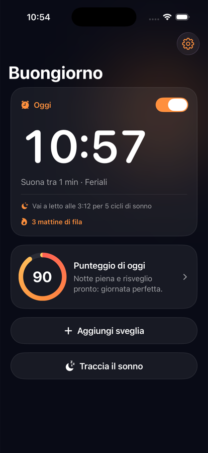
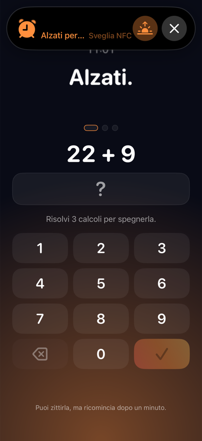
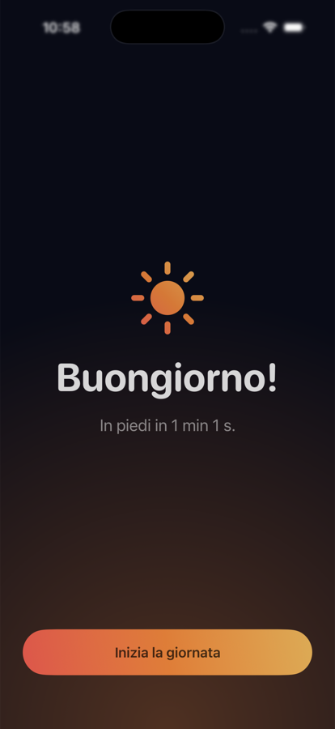
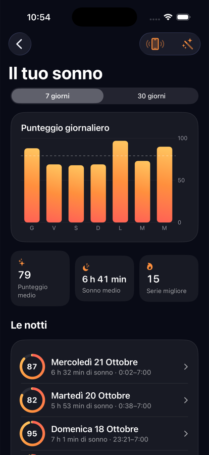
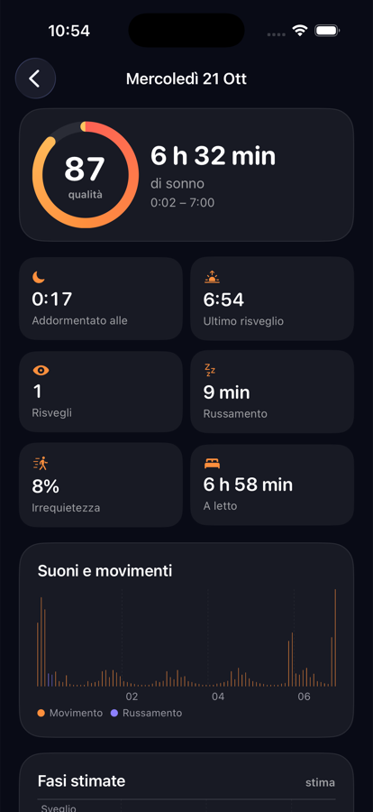

Pantofole
Pantofole
Per spegnerla devi alzarti.
Pantofole è una sveglia per iPhone che smette di suonare solo quando appoggi il telefono su un tag NFC lontano dal letto, oppure risolvi una missione di matematica. Gratis, senza account, senza pubblicità.
Codice sorgente Come funziona




Cosa fa
- Si spegne solo col tag. Va bene qualsiasi tag NFC da pochi centesimi, o il dischetto stampato in 3D del progetto.
- Niente posticipo. Se la zittisci ricomincia dopo un minuto. Dopo 30 minuti si ferma da sola, come uscita di emergenza.
- Niente scappatoie la sera prima. Nelle 8 ore prima della sveglia per modificarla serve il tag.
- Missioni di matematica come alternativa, se non hai un tag.
- 32 suonerie originali, più la tua canzone.
- Ascolto del sonno sul comodino: tutto analizzato sul telefono, l'audio non viene mai registrato.
- Punteggio di oggi che unisce sonno e risveglio, con lo storico.
Privacy prima di tutto
Nessun account, nessun server, nessun tracciamento. Sveglie, tag e notti restano sul tuo iPhone. Leggi la privacy policy.